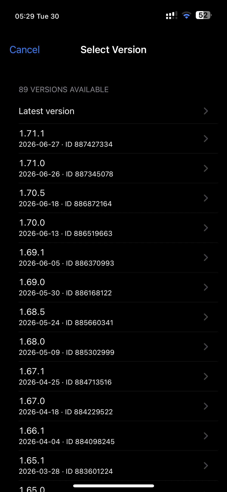
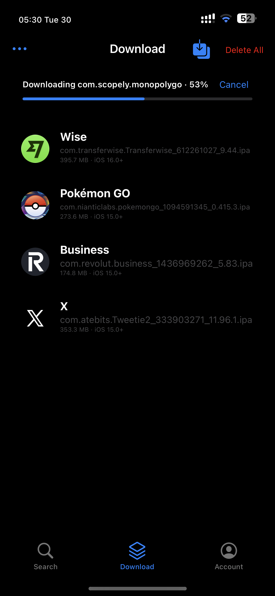
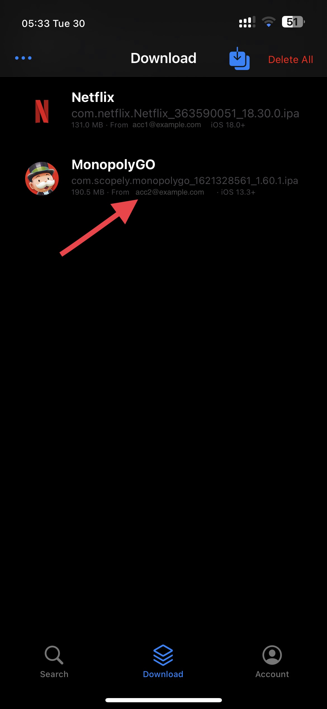
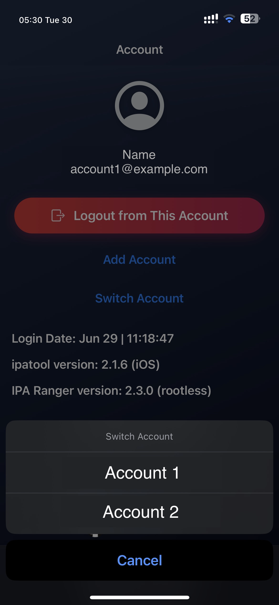

An experimental fork of IPARanger (a GUI for ipatool that downloads
IPAs from the App Store). Made for personal use and experimentation — shared as-is, not a
replacement for the original.




ipatool keychain per account (no login/token conflicts)ipatool to reduce recurring auth / JSON errorsTested on rootless (Dopamine, iOS 16.4) and limited rootful (iOS 13.5). Experimental — rough edges expected on other setups. Pick the build matching your jailbreak.
Fork of IPARanger by 0xkuj · ipatool by majd · changes by schlub51. MIT.